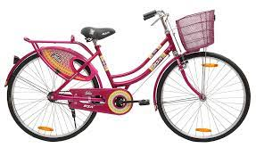
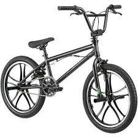

Freedom.Fun
Energy. Style.Comfort.
These are the values that define BSA – one of the most familiar and loved brands. Offering
consumers an extensive range of bicycles and mobility products, BSA has something for
– kids, teens and adults
The BSA Bikes
BSA Kids
Cycling spurs a child’s motor development and provides other benefits like increased confidence, better sense of independence, the desire to explore new places and good social skills. It keeps them active and fit. With this in mind, we consciously strive to provide exciting bicycle designs, fun features, vibrant colours and innovative add-ons that enable young adventurers to embark on the ride of their lives!

BSA Roadsters
Rugged and reliable, our range of Roadsters is truly a cut above the rest. These bicycles are designed to carry heavy loads as well as travel for long distances. When it comes to trust and performance, nothing beats the classic and hard working Roadster.
BSA Ladybird
BSA Ladybird gives your dreams wings on two wheels. With a BSA Ladybird by your side, every moment becomes joyous, exciting and amusing. Each ride is fun, comfortable and secure with the exciting new range of colourful and feature loaded bicycles. These bicycles enable you to explore the world fearlessly with confidence. Say hello to your new best friend because fun times begin with BSA Ladybird.

BSA Jr. Roadsters
Expressing style, strength and reliability, our range of Junior Roadster bicycles empower their riders to pursue their dreams. Stylish yet functional, practical yet dependable, our bicycles are the partners in growth for teens in large parts of the nation. Be it long commutes or looking better than the rest, our bicycles never let the rider down.
©Marvel | ©Disney
© Copyright 2023, BSA Cycles. All rights reserved.
Disclamiar